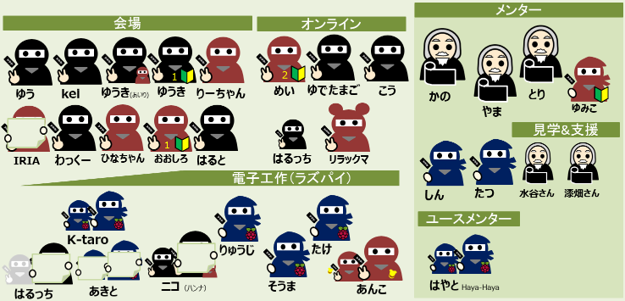
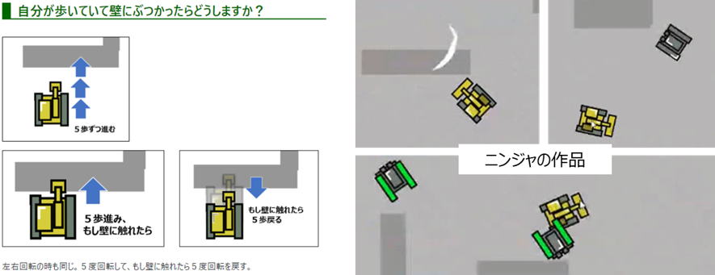
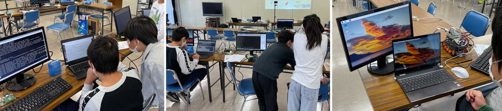

午前と午後の２回開催
第43,44回 ニンジャ24名。午後のWi-Fiアクセスポイント制作は感動！
午前のみんなで同じテーマScratchはブルトーザーの市街地走行。午後はラズパイタンクをノートPCからリモート操作するためにラズパイにWi-Fiアクセスポイントを制作するもの。
本日の青梅Dojo出欠確認です
参加者は午前19名・午後6名のニンジャ合計25名。ご家族は保護者・妹さん達が10名以上。新人メンターのゆみこさんも今月から加わってメンターは8名。延べ43名以上。たぶん最多😮

本日のワークショップ１．Scratchプログラミング（入門・初級）
CoderDojo青梅の進め方は、毎月いつも３つのコースから選択です。
１．入門向けプログラミング体験
２．自分で決めたテーマ
３．みんなで共通のテーマ
みんなで共通のテーマは、前回の続きでブルトーザーの市街地走行。教材は📰青梅Ninja's Worksを見ながら制作。

会場のワークショップ風景。進め方が分からないとか、初心者には入門コースから遊び方をメンターがサポートしています。TV画面の向こう側はニュージーランドやマレーシアなどリモート会場での入門コースも開催しています。
前々回（１月）のテーマを継続して横にステージ移動するニンジャの作品Snowmanを紹介させていただきました。
教材ページへジャンプする機能
「降雪＆横ステージ移動」や「ブルトーザー」をやってみたい人はCoderDojo青梅の教材「272」か「634」にジャンプしよう。
オンライン会場で発表会
CoderDojo青梅の発表会は、会場もオンラインも皆、オンラインで画面を共有して発表します。オンラインのコーディネーターは海外メンターの「しんくん」とやや遠方から参加してくれているメンターの「たつきさん」。二人ともオンラインでは初心者にやさしくプログラミングをレクチャーしています。いつもありがとう。ニンジャの作品はまだ1~2回しか参加していない入門から中級までさまざまなので楽しいです。マウスで一生懸命、描いたイラストもステキですね。
ばいばい。ひなちゃん・れおちゃん、今度はオンラインで会おうね！
CoderDojo青梅がスタートした初回からずうっと参加してくれた二人の姉妹、4月からオーストラリアで新しい生活がスタートします。だから会場で会えるのは今日まで。でも青梅Dojoはオンライン会場も併設しているから大丈夫。オーストラリアなら時差もないし、今度はオンラインで会おうね。
本日のワークショップ２．ラズパイでWi-Fiアクセスポイントをつくる
CoderDojo青梅の午後の部はわずか2時間。前回は時間が足りずラズパイにWi-Fiアクセスポイントを追加できた人は保護者のヘルプも入って2名のみ。だから今月も続きをやります。今度はWi-Fiアクセスポイントのしくみを30分間かけて解説しました。手順ドキュメントは📰ラズパイをWi-Fiアクセスポイント化。
ラズパイのWi-Fiアクセスポイント設定は、とっても難しい高度な設定でした。ちょっとのスペルミスや設定ファイルの書き間違え、そして僕が作った教科書のコマンド記載ミスなどあって大変でした。大変だったからこそ、うまく自分専用Wi-Fiアクセスポイントに接続成功したニンジャは本気のガッツポーズです。そして先に完成したニンジャが、まだ成功していないニンジャを助けてあげる姿がすばらしかったです。助け合いのおかげで全員Wi-Fiアクセスに成功してとっても感動しました！

次回は4月16日(日)開催でーす。
Connpassでイベント告知するので、またの参加をお待ちしています。参加申し込みはこちらのConnpassから
 CoderDojo青梅のメンターへのメールはこちら
CoderDojo青梅のメンターへのメールはこちら
😃